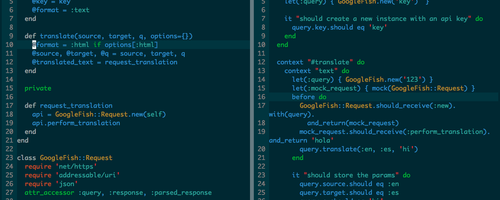

Toggle navigation
FARDIN KHANJANI
About
Blog
Resume/CV
Contact
My thoughts and
BLOG POSTS
McDaniel Media
Medias are playing a very important rule in every single life today. The very famous ones such as BBC or CNN, their b...
The American Experience Semester
On Thursday October 13 there was a meeting with Rose Falkner regarding the American experience semester for those stu...

How I started coding
The first thing I came into touch with was HTML. I could write reasonably good HTML within a few days and that was th...
Older posts